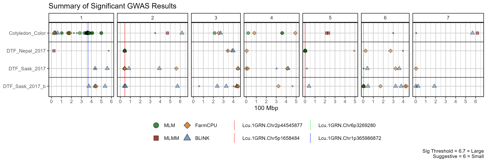
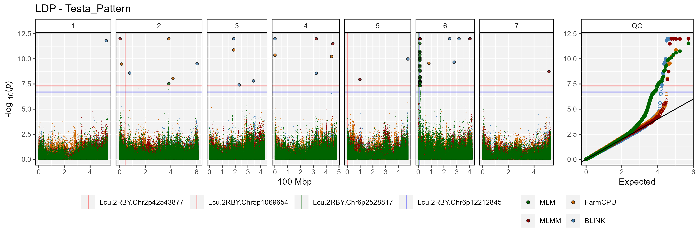
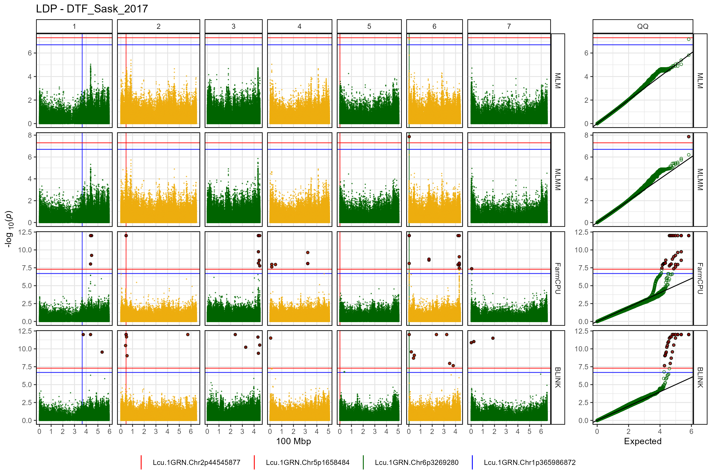

Usage
For best practice, output from GAPIT should be in its own folder. In this case, they are located in a folder called GWAS_Results/. For this example we will plot GWAS results from 3 traits in a lentil diversity panel:
- Testa_Pattern: a qualitative trait describing the presence or absence of seed coat pigmentation.
- DTF_Nepal_2017: a quantitative trait describing days from sowing to flowering in a 2017 Nepal field trial.
- DTF_Sask_2017: a quantitative trait describing days from sowing to flowering in a 2017 Saskatchewan field trial.
- DTF_Sask_2017_b: same as above but run with the b coefficient from a photothermal model (see Wright et al. 2020) used as a covariate.
Note: for more info check out this GWAS tutorial.
List Traits
myTraits <- list_Traits(folder = "GWAS_Results/")
myTraitsList Results Files
myFiles <- list_Result_Files(folder = "GWAS_Results/")
myFiles## [1] "GAPIT.Association.GWAS_Results.BLINK.DTF_Nepal_2017.csv"
## [2] "GAPIT.Association.GWAS_Results.BLINK.DTF_Sask_2017.csv"
## [3] "GAPIT.Association.GWAS_Results.BLINK.DTF_Sask_2017_CV_b.csv"
## [4] "GAPIT.Association.GWAS_Results.BLINK.Testa_Pattern.csv"
## [5] "GAPIT.Association.GWAS_Results.FarmCPU.DTF_Nepal_2017.csv"
## [6] "GAPIT.Association.GWAS_Results.FarmCPU.DTF_Sask_2017.csv"
## [7] "GAPIT.Association.GWAS_Results.FarmCPU.DTF_Sask_2017_CV_b.csv"
## [8] "GAPIT.Association.GWAS_Results.FarmCPU.Testa_Pattern.csv"
## [9] "GAPIT.Association.GWAS_Results.GLM.DTF_Nepal_2017.csv"
## [10] "GAPIT.Association.GWAS_Results.GLM.DTF_Sask_2017.csv"
## [11] "GAPIT.Association.GWAS_Results.GLM.DTF_Sask_2017_CV_b.csv"
## [12] "GAPIT.Association.GWAS_Results.GLM.Testa_Pattern.csv"
## [13] "GAPIT.Association.GWAS_Results.MLM.DTF_Nepal_2017.csv"
## [14] "GAPIT.Association.GWAS_Results.MLM.DTF_Sask_2017.csv"
## [15] "GAPIT.Association.GWAS_Results.MLM.DTF_Sask_2017_CV_b.csv"
## [16] "GAPIT.Association.GWAS_Results.MLM.Testa_Pattern.csv"
## [17] "GAPIT.Association.GWAS_Results.MLMM.DTF_Nepal_2017.csv"
## [18] "GAPIT.Association.GWAS_Results.MLMM.DTF_Sask_2017.csv"
## [19] "GAPIT.Association.GWAS_Results.MLMM.DTF_Sask_2017_CV_b.csv"
## [20] "GAPIT.Association.GWAS_Results.MLMM.Testa_Pattern.csv"List Significant Markers
# first reorder the result files if they are not already arranged by P.value
order_GWAS_Results(folder = "GWAS_Results/", files = myFiles)
myResults <- table_GWAS_Results(folder = "GWAS_Results/", files = myFiles,
threshold = 6.7, sug.threshold = 6)
myResults[1:10,]## SNP Chr Pos P.value MAF H.B.P.Value
## 1 Lcu.2RBY.Chr6p12212845 6 12212845 2.553940e-55 0.42056075 6.840600e-50
## 2 Lcu.2RBY.Chr5p1061938 5 1061938 4.300613e-33 0.12345679 1.151898e-27
## 3 Lcu.2RBY.Chr6p14410759 6 14410759 9.468879e-31 0.38317757 2.536192e-25
## 4 Lcu.2RBY.Chr6p2528817 6 2528817 2.687467e-30 0.27932099 7.198246e-25
## 5 Lcu.2RBY.Chr3p188873032 3 188873032 2.260523e-29 0.01168224 3.027349e-24
## 6 Lcu.2RBY.Chr4p323097758 4 323097758 3.245062e-27 0.07943925 4.345868e-22
## 7 Lcu.2RBY.Chr6p317400151 6 317400151 4.516331e-27 0.09112150 4.032255e-22
## 8 Lcu.2RBY.Chr6p12192948 6 12192948 8.560650e-27 0.43925234 2.292927e-21
## 9 Lcu.2RBY.Chr2p42543877 2 42543877 3.264679e-25 0.06790123 4.372140e-20
## 10 Lcu.2RBY.Chr5p1061938 5 1061938 8.804190e-24 0.12345679 2.358158e-18
## Effect -log10(p) Model Trait Threshold
## 1 0.4002402 54.59279 MLMM Testa_Pattern Significant
## 2 -12.1833602 32.36647 BLINK DTF_Nepal_2017 Significant
## 3 0.2234545 30.02370 BLINK Testa_Pattern Significant
## 4 -2.1310601 29.57066 FarmCPU DTF_Sask_2017_CV_b Significant
## 5 0.3969966 28.64579 BLINK Testa_Pattern Significant
## 6 0.3775797 26.48878 MLMM Testa_Pattern Significant
## 7 0.3144896 26.34521 BLINK Testa_Pattern Significant
## 8 0.2223050 26.06749 FarmCPU Testa_Pattern Significant
## 9 10.7592301 24.48616 BLINK DTF_Nepal_2017 Significant
## 10 -10.8302898 23.05531 FarmCPU DTF_Nepal_2017 Significant
list_Top_Markers(trait = "DTF_Nepal_2017", model = "MLMM",
folder = "GWAS_Results/",
threshold = 6.7, chroms = c(2,5), n = 1)## SNP Chr Pos -log10(p)
## 1 Lcu.2RBY.Chr2p42543877 2 42543877 11.53
## 2 Lcu.2RBY.Chr5p1069654 5 1069654 16.66
myMarkers <- c("Lcu.2RBY.Chr2p42543877","Lcu.2RBY.Chr5p1069654",
"Lcu.2RBY.Chr6p2528817", "Lcu.2RBY.Chr6p12212845")
list_Top_Markers(trait = "Testa_Pattern", model = "MLM",
folder = "GWAS_Results/",
threshold = 6.7, chroms = 6, n = 1)
table_Results_Summary("GWAS_Results/", isOrdered = F)## Trait GLM MLM MLMM FarmCPU BLINK
## 1 DTF_Nepal_2017 NA X X X X
## 2 DTF_Sask_2017 NA X X X X
## 3 DTF_Sask_2017_CV_b NA X X X X
## 4 Testa_Pattern NA X X X X
table_Results_Summary("GWAS_Results/", isOrdered = T)Summary Plot
mp <- gg_GWAS_Summary(folder = "GWAS_Results/",
traits = myTraits,
models = c("MLM", "MLMM", "FarmCPU", "BLINK"),
colors = c("darkgreen", "darkred", "darkorange3", "steelblue"),
threshold = 6.7, sug.threshold = 6,
hlines = c(1.5,3.5), legend.rows = 2,
vlines = myMarkers,
vline.colors = c("red", "red", "green", "blue"),
title = "Summary of Significant GWAS Results")
ggsave("man/figures/GWAS_Summary.png", mp, width = 12, height = 4)
Manhattan Plots
Multi Manhattan Plots
for(i in myTraits) {
mp <- gg_Manhattan(folder = "GWAS_Results/",
trait = i,
title = paste("LDP -", i),
threshold = 7.3,
sug.threshold = 6.7,
vlines = myMarkers,
vline.colors = c("red","red","darkgreen","blue"),
vline.legend = T,
facet = F,
addQQ = T,
pmax = 12,
models = c("MLM", "MLMM", "FarmCPU", "BLINK"),
model.colors = c("darkgreen", "darkred", "darkorange3", "steelblue"),
legend.rows = 2)
ggsave(paste0("man/figures/Multi_", i, ".png"),
mp, width = 12, height = 4, bg = "white")
}



Facetted Manhattan Plots
for(i in myTraits) {
mp <- gg_Manhattan(folder = "GWAS_Results/",
trait = i,
title = paste("LDP -", i),
threshold = 7.3,
sug.threshold = 6.7,
vlines = myMarkers,
vline.colors = c("red","red","darkgreen","blue"),
vline.legend = T,
facet = T,
addQQ = T,
pmax = 12,
models = c("MLM", "MLMM", "FarmCPU", "BLINK"),
chrom.colors = rep(c("darkgreen", "darkgoldenrod2"), 4),
legend.rows = 2)
ggsave(paste0("man/figures/Facet_", i, ".png"),
mp, width = 12, height = 8)
}
